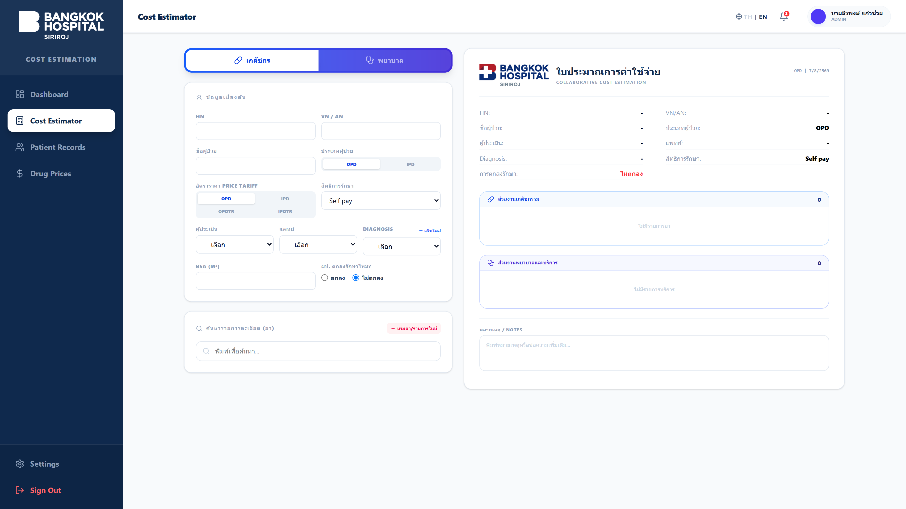

👤 Solo Full-Stack Project 🔍 คลิกดูภาพหน้าจอขยาย1. Hospital Cost Estimation MVP
ระบบประเมินค่ารักษาพยาบาลผู้ป่วยเคมีบำบัดและเวชภัณฑ์ทางการแพทย์
- • คำนวณราคายาและเวชภัณฑ์แยกตามสิทธิ์ผู้ป่วย 4 ประเภท (
OPD,IPD,OPDTR,IPDTR) - • ระบบจัดชุดรายการยา (Item Set Folding) และพักรายการชั่วคราว (Draft Staging)
- • รองรับ Offline LocalStorage Fallback & Auto-Migration ซิงค์ขึ้น PostgreSQL อัตโนมัติ พร้อมออกใบประเมินราคา PDF
React 18
Vite
Tailwind CSS v4
Node.js / Express
PostgreSQL
Vitest